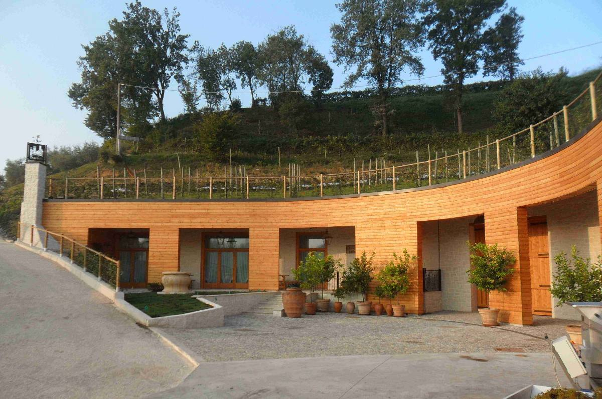
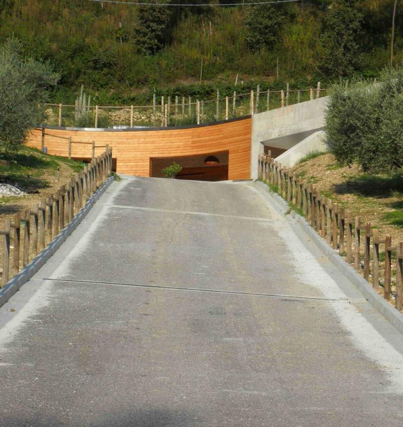
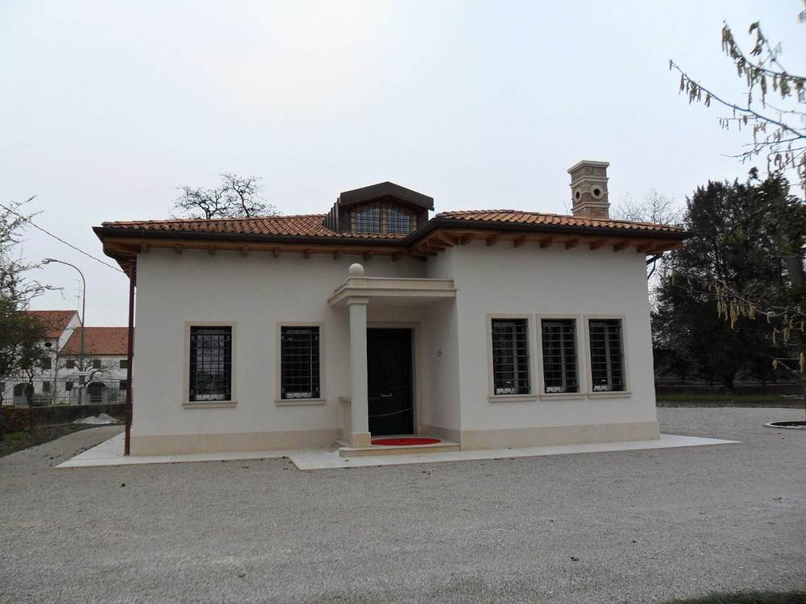
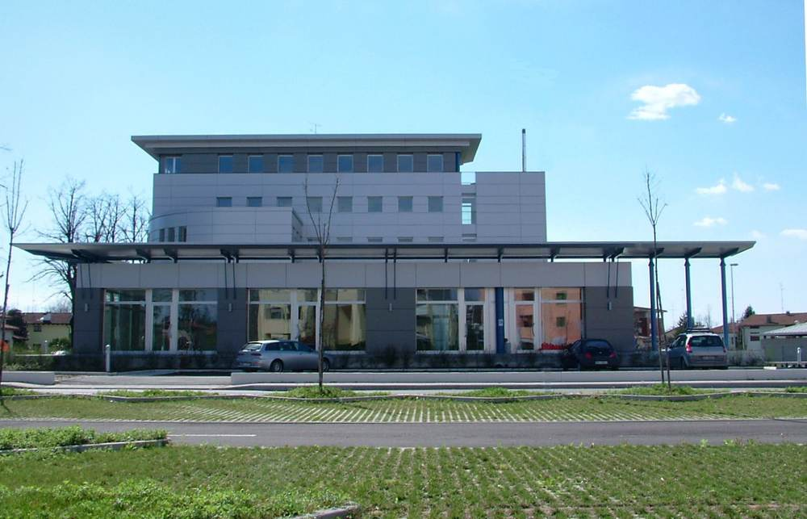
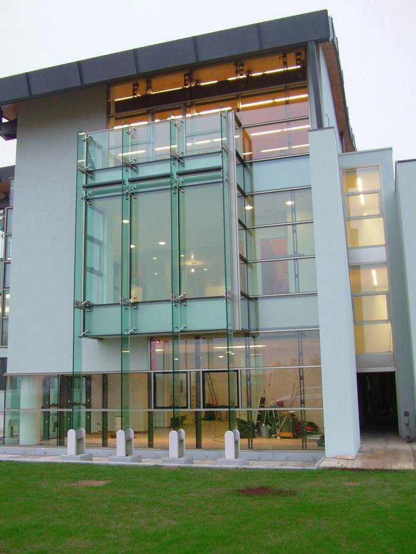
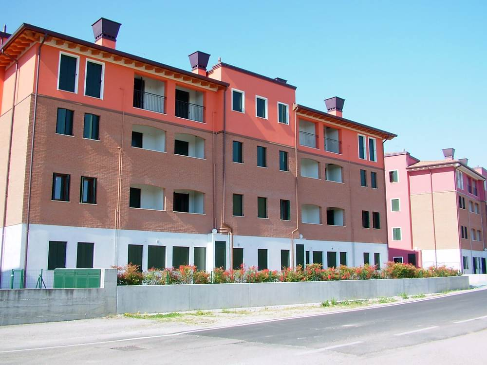
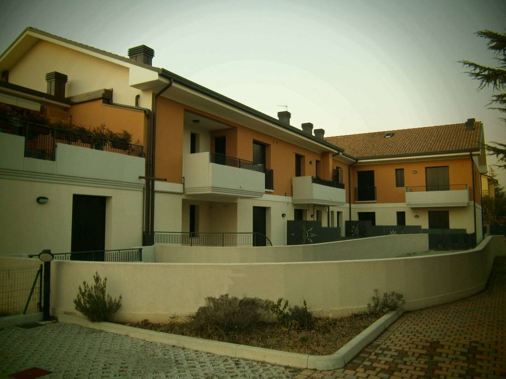
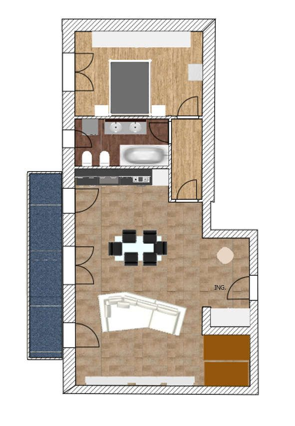

Cantina 2 Castelli, Colfosco. Realizzata da noi.
Lancenigo di Villorba · Treviso
Case, ville, una cantina nella collina.
Edifici residenziali e non residenziali, dalle fondazioni alle finiture. Una cantina inserita nella collina, residenze, ville e un centro commerciale e direzionale.
- VillorbaVicolo Cavour 23, Lancenigo
- Residenziale e nonCase, ville, negozi, uffici, cantine
- 17 alloggiResidence Galanti, completato nel 2009
- 4,8 su Google4 recensioni
Realizzazioni
Quattro cantieri, quattro mondi diversi.
Dal cemento armato nascosto nella collina alla villa di famiglia, dai negozi agli uffici. Le foto sono dei nostri lavori.





Dal progetto alle chiavi
Prima la linea, poi la casa.

- 01 ProgettoLe linee sul foglio, i permessi, i calcoli.
- 02 StrutturaFondazioni, pilastri, solai.
- 03 Tetto e muriIl fabbricato chiude e prende forma.
- 04 FinitureImpianti, intonaci, giardini. Poi le chiavi.
Residence Galanti · Lancenigo
Diciassette case vicino alla chiesa, nel verde.
Completato nel 2009, con un isolamento termico già in linea con i parametri richiesti dal 2012. Un contesto verde e rilassante, vicino alla chiesa.
- 17alloggi
- 2009anno di completamento
- Riscaldamento a pavimento e caldaia a condensazione
- Mansarde con travi a vista e lucernari motorizzati
- Garage doppi finestrati con basculante motorizzato
- Predisposizione per climatizzazione e allarme

Come lavoriamo
Un'impresa di paese, cantieri di ogni tipo.
Lavoriamo per privati e aziende: case, ville, palazzine, edifici commerciali e direzionali.
- 1
Incontro
Ci raccontate cosa volete costruire.
- 2
Preventivo
Su misura del vostro lavoro.
- 3
Cantiere
Dalle fondazioni al tetto.
- 4
Finiture
Scelte insieme a voi.
- 5
Consegna
Le chiavi in mano a voi.
Contatti
Parliamo del vostro progetto.
- Telefono0422 446339
- Emailinfo@buosicostruzioni.it
- SedeVicolo Cavour 23, 31020 Lancenigo di Villorba (TV)